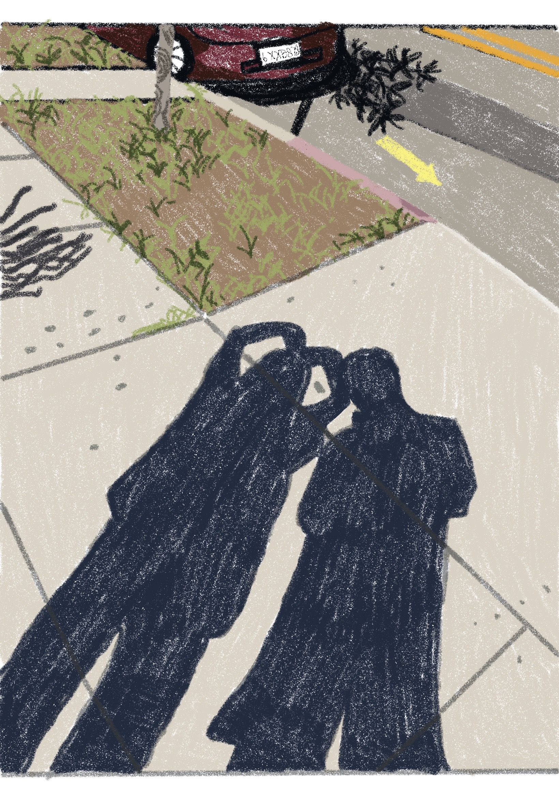
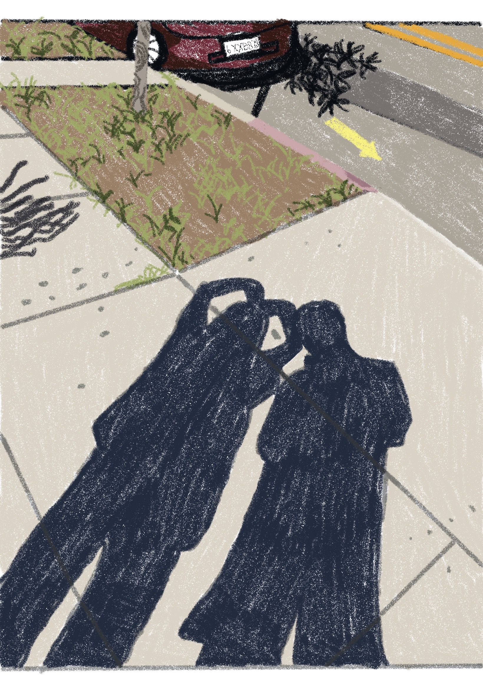
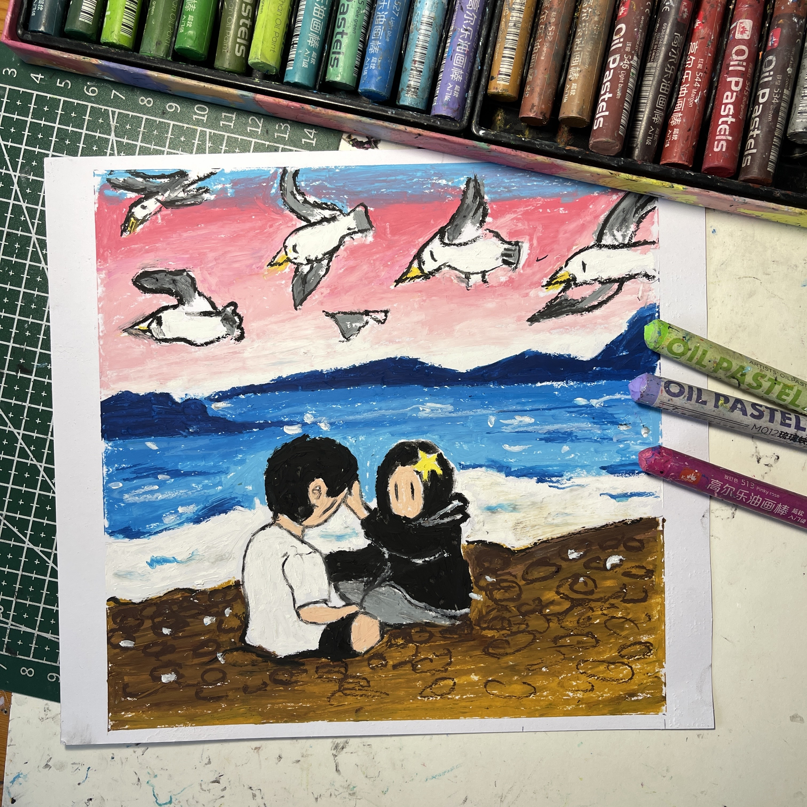
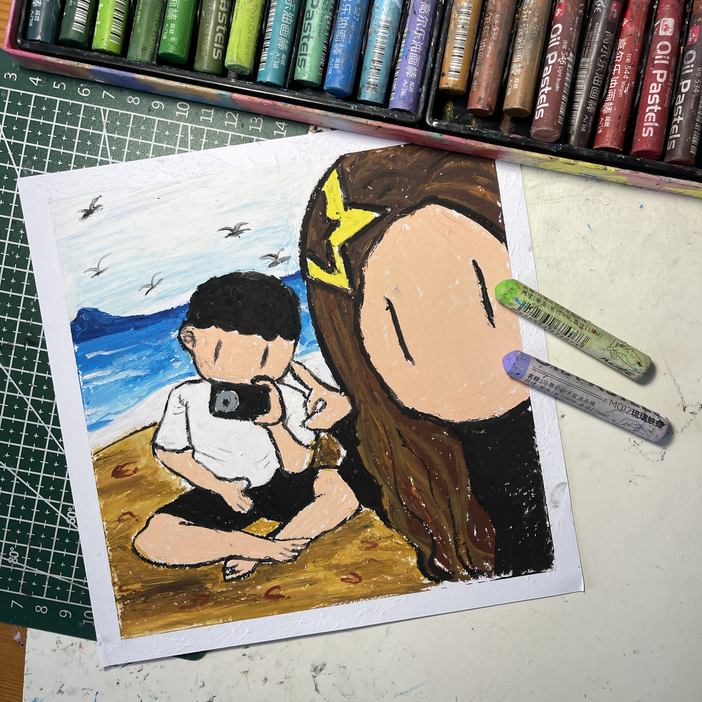
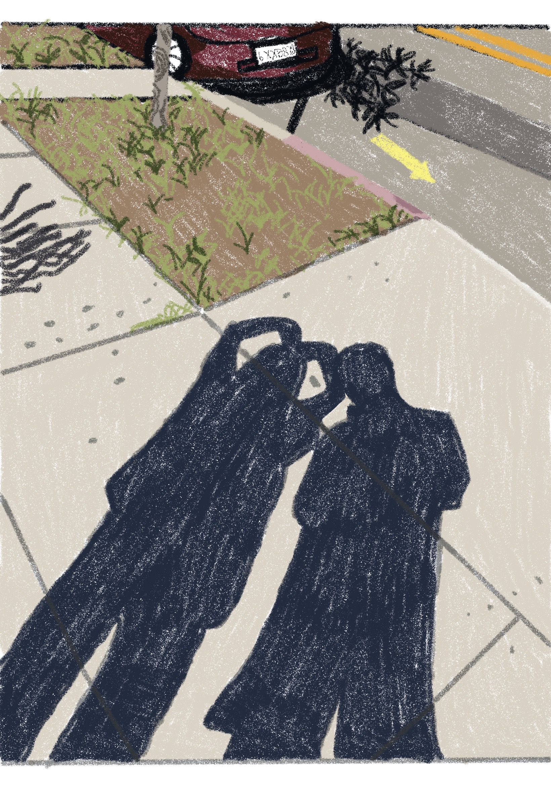
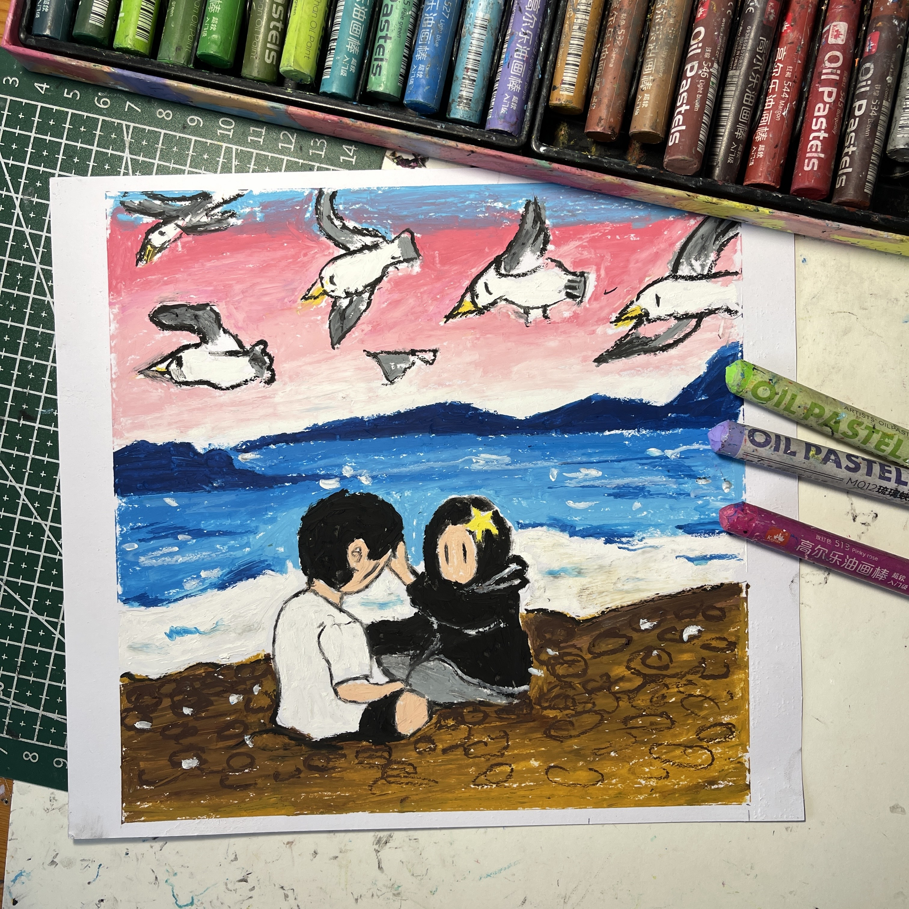
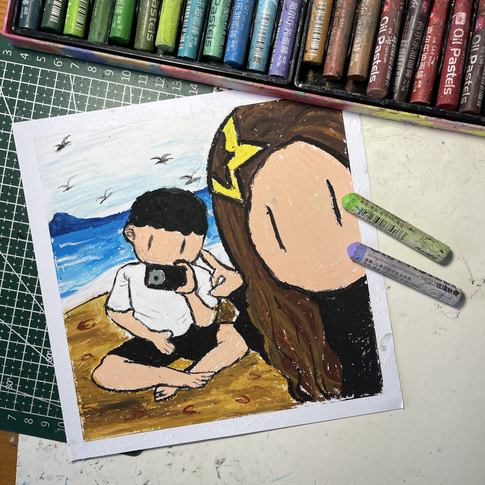

John Doe
I am an innovative and dedicated engineer with over a decade of experience in the fields of mechanical and software engineering. My journey began with a fascination for how things work, which led me to pursue a Bachelor’s degree in Mechanical Engineering from the University of California, Berkeley. After gaining substantial experience in mechanical design and product development, I furthered my education with a Master’s degree in Software Engineering from Stanford University. This unique combination of skills has allowed me to excel in multidisciplinary projects and bridge the gap between physical engineering and digital solutions. Currently, I am employed at Tesla, Inc., where I lead a team of engineers in the Autonomous Vehicles division. My role involves overseeing the design and implementation of software that interacts seamlessly with mechanical systems, enhancing the safety and efficiency of self-driving cars. One of my significant contributions to the company was leading the project that developed a predictive maintenance system for electric vehicle batteries, which has drastically reduced downtime and maintenance costs.
Outside of my professional life, I am passionate about mentorship and education. I volunteer as a mentor for young engineers at Code.org, providing guidance and support to those who are just beginning their careers. This role allows me to give back to the community and share the knowledge and experience I have accumulated. Additionally, I regularly speak at conferences and workshops, discussing the integration of mechanical and software engineering to innovate and solve complex problems. My approach to engineering is holistic; I believe in understanding both the minute details and the bigger picture. This philosophy has not only guided my professional career but also influences my personal projects. In my spare time, I enjoy building small robots and creating software that helps automate everyday tasks. These hobbies allow me to continuously learn and apply my skills in new and challenging contexts.
Looking ahead, I am excited about the possibilities that new technologies bring to engineering. I am particularly interested in the advancements in artificial intelligence and its application in enhancing autonomous systems. My goal is to contribute to projects that not only advance our technological capabilities but also address significant societal challenges such as sustainability and safety. In summary, my career as an engineer is driven by a passion for innovation and a commitment to excellence. Whether it’s leading cutting-edge projects at Tesla, mentoring the next generation of engineers, or engaging with the community through education and public speaking, I strive to make a meaningful impact in the world of engineering and beyond.
Experience
Senior Engineer - Autonomous Vehicles Division
• Lead a team of engineers in developing software for autonomous vehicles.
• Pioneered a predictive maintenance system for EV batteries, reducing maintenance costs by 25%.
• Collaborate with cross-functional teams to integrate mechanical systems with digital controls.
Mechanical Engineer
• Designed components for commercial aircraft, focusing on improving fuel efficiency and reducing weight.
• Utilized CAD software to prototype new component designs and conducted stress tests to ensure durability.
Research Assistant - Robotics Lab
• Assisted in the development of robotic systems for automated assembly processes
• Programmed and tested algorithms for pathfinding and object manipulation
• Published 2 papers on robotics automation techniques in peer-reviewed journals
Education
UC Riverside
Portfolio
 



 